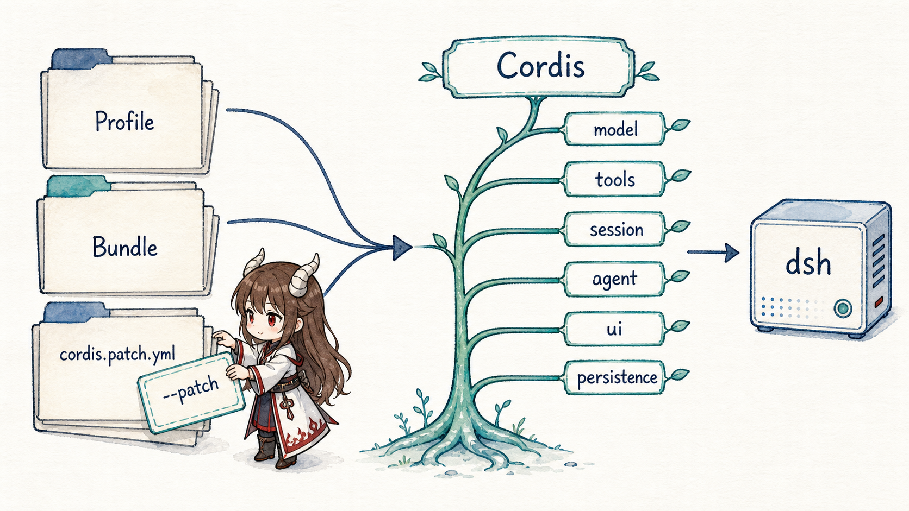
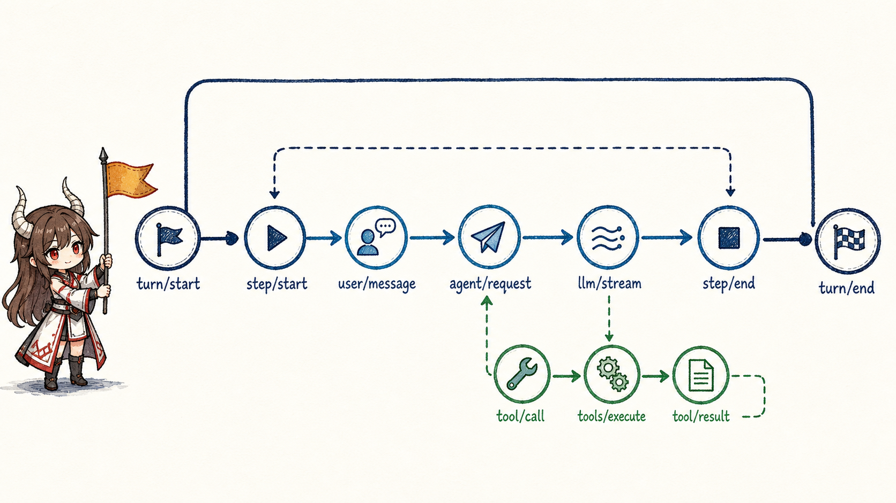
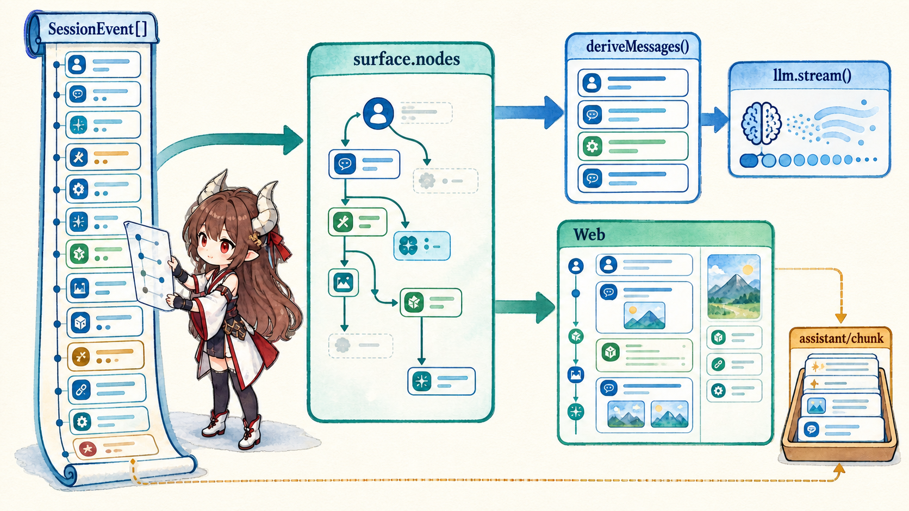
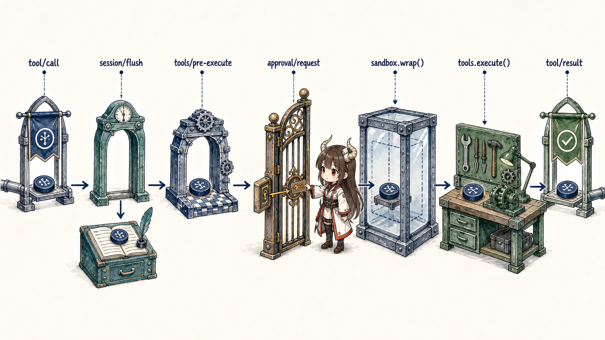
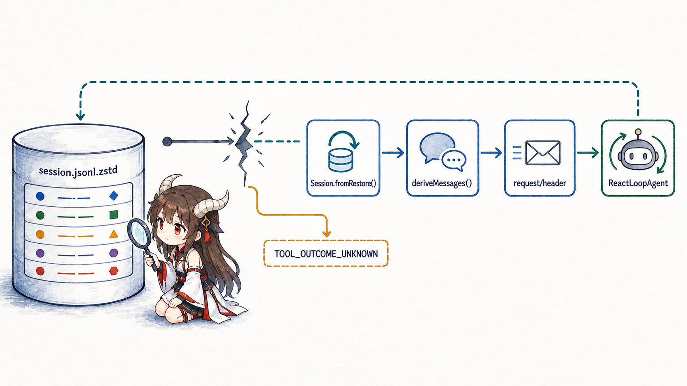
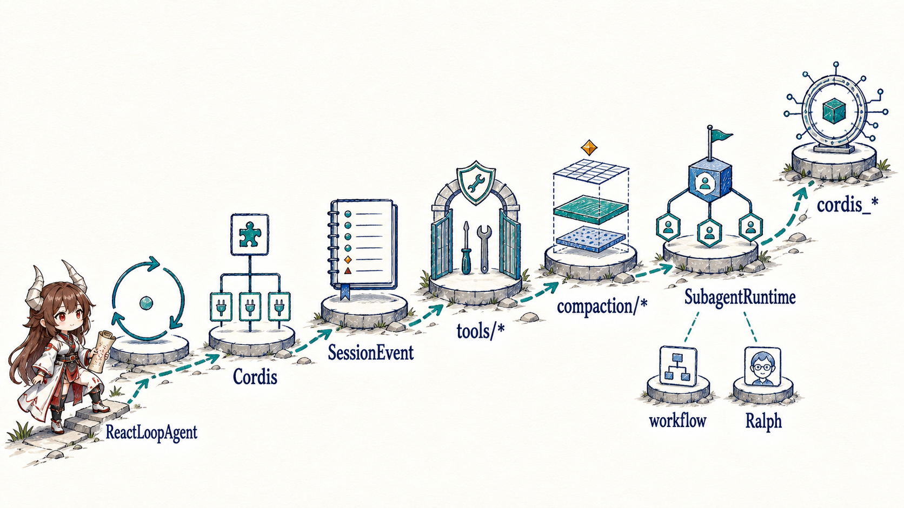

Consider one task: a user opens dsh web and asks the agent to inspect failing tests, repair them, and report the result. The launcher must select a product composition; the runtime must create or restore a session; the model may request several tools; and the interface must expose both progress and the terminal answer.
Reducing this to “browser → LLM → tool → answer” removes the ownership boundaries that make it reliable. Who assembles system instructions, history, and tools before the provider request? Who ensures the durable record crosses a checkpoint before a side effect? After a crash, which events may be replayed, and which effects must remain explicitly uncertain? A harness that cannot answer those questions is only a successful demo path.
Reading contract.After this chapter, you should be able to explain how dsh web selects a profile; how bundle patches become a Cordis plugin tree; how ReactLoopAgent separates turns from steps; why SessionEvent[], surface.nodes, and deriveMessages() are not one chat transcript; and why a tool effect crosses logging, policy, and sandbox boundaries.
Evidence boundary.This chapter is pinned to DeepSeek Harness commit b150a551b8d465e31e418e1b2eaf5e79bbb7d28e, tagged dsh-v0.1.1-rc.2. Types, event ordering, and the base composition come from that snapshot. The repository also calls the project a developer preview, so the evidence supports source contracts—not a claim of production maturity, performance, or certified security.
1. dsh web boots a composition, not a single app
1.1 The CLI selects a profile, then yields the remaining arguments
apps/cli/src/args.ts defines web as a hard-coded alias for --profile web. The launcher parses only the profile, patch, and config-dump flags it owns. Remaining argv becomes an immutable cmdlineArgs snapshot interpreted by application plugins inside the mounted composition.
This apparently small CLI boundary removes a large coupling: the top-level launcher does not need to learn every future Web, TUI, or headless flag. It chooses the plugin tree; plugins define product behavior.
dsh web --no-open
dsh --profile headless "run the tests"
dsh --profile tui --patch ./extra.yml --resume <session>1.2 A Profile is a mutable instance; a Bundle is a reusable layer

profile-boot.ts makes the precedence explicit: bundle patches in dsh.profile.bundles order, the profile's own cordis.patch.yml, the home patch, command-line --patch overlays, and finally the telemetry switch. These are successive patches over one configuration tree, not unrelated configuration files.
A Bundle therefore represents a reusable, publishable product layer such as base or web-app. A Profile is the instance that will actually boot in one user environment. It may install more bundles and override their defaults. dsh plugin updates the on-disk manifest and bundle list; it does not silently replace the tree already running in memory.
| Layer | Fact it owns | What a change affects |
|---|---|---|
| Bundle | A reusable Cordis patch and its dependencies. | The product's default services and plugins. |
| Profile manifest | Which bundles this instance applies and in what order. | The composition on the next boot. |
cordis.patch.yml | Instance-level plugin configuration and overrides. | Service parameters, mount points, and local capabilities. |
--patch | A temporary overlay for this invocation. | Diagnostics and one-off compositions without rewriting the base. |
1.3 “Everything is a plugin” means capability seams are replaceable
The repository's architecture document lists model adapters, tools, the session log, and the agent loop as plugins. packages/core/* keeps a small set of kernel contracts: LLM requests and stream chunks, tool schemas and execution, SessionEvent, Agent handles, and scoped plugin context. Providers implement capabilities through Cordis services and events.
The important point is not the number of npm packages. Consumers depend on a capability; a provider supplies it within a scope. The plugin tree determines visibility, disposal, and interception order. A model adapter, persistence layer, or agent loop can change without teaching every upper layer a new implementation type.
2. A turn enters ReactLoopAgent through a Session
2.1 Session becomes the container for runtime facts
A Web or ACP surface does not call llm.stream() directly. It obtains an Agent handle from a registry, associated with a Session. The Session owns append-only SessionEvent[], the active surface, request headers, and scoped context. Persistence plugins subscribe to session/event and are awaited at the session/flush observation barrier.
This gives “model-visible” a strict foundation. A fact that should participate in recovery, projection, or a future request must first become a session event. State that exists only in a local variable, a console line, or a UI store is not recoverable agent history.
2.2 A turn contains steps; a step advances one model interaction

ReactLoopAgent.run() appends turn/start after claiming an inbox item. Each advance appends step/start; the first step turns the input into user/message. Tool results can drive later steps. Only when a stopping policy supplies a reason does the loop append turn/end.
A turn is therefore not one HTTP request or one provider call. Repairing tests may require four model–tool exchanges and still remain one turn. A step is the observable unit of advancement inside it.
session.append('turn/start', { turn })
while (!turnEnds) {
session.append('step/start', { turn, step })
const prepared = await preStep(target, { turn, step })
await step(prepared, { turn, step }, signal)
session.append('step/end', { turn, step, reason })
}
session.append('turn/end', { turn, reason: turnEnds })2.3 preStep() claims input and assembles capabilities
preStep() claims the current inbox target, runs prompt and tool assembly, merges runtime context, and executes the agent/pre-step waterfall. The claim prevents concurrent loops from treating the same item as their next user message.
System instructions and tools are not necessarily frozen when the Agent object is constructed. Plugins can supply or filter them by session, turn, step, and runtime scope. That flexibility makes assembly order part of product semantics; Part II will read how Cordis patches establish the order.
3. The model sees an event projection, not the raw log
3.1 buildRequest() fixes the request envelope before dispatch
Inside a step, the loop emits agent/request, calls Session.deriveMessages(), and asks the LLM service to prepare a provider call. The dispatch path then consumes llm.stream() and appends every chunk as assistant/chunk.
buildRequest() also logs the non-history request envelope as request/header: provider, model, system text, tools, and adapter defaults have a canonical recovery snapshot. Conversation messages alone cannot prove which tool set and model configuration produced an in-flight request.
3.2 One Session maintains three distinct views

Session maintains three related forms:
- Raw event log:ordered
SessionEvent[]retains turn, step, chunk, tool, header, and compaction facts. - Surface projection:
surface.nodesexpresses the active conversation surface. Compaction can replace an old surface range with a new generation without deleting the raw events. - Model messages:
deriveMessages()converts only eligible surface nodes intoMessage[]. Boundaries such asturn/startand rawassistant/chunkare not copied directly into provider history.
The Web UI may consume more events for progress, tokens, tool state, and diagnostics. “Visible to the user,” “visible to the model,” and “available for recovery” are therefore separate properties derived from one source—not interchangeable transcripts.
4. Tool calls cross durability and governance boundaries
4.1 The model proposes an action; the runtime owns the effect

When the LLM stream emits a structured tool call, the loop records it before handing it to the tool service. The base bundle also mounts checkpoint policy, approval, sandbox, and result-pruning plugins. They answer different questions: is the call durably recorded; does policy permit it; has a user approved it; where can the code execute; and how should the result re-enter the model surface?
These cannot collapse into one “security check.” Approval is an interactive decision, not filesystem isolation. A sandbox restricts an environment but does not know the user's intent. session/flush proves that the log crossed a durability barrier; it does not make an action authorized. Separate owners let failure resolve to rejection, waiting, retry, or deliberate stop.
4.2 Recovery is safe only if uncertainty can be represented

The default JSONL persistence appends events and can use zstd compression. On resume, Session.fromRestore() validates seed events, reconstructs the surface and request header, and lets the Agent continue from durable state. The dangerous crash falls after an external side effect but before a durable tool/result.
repair.ts distinguishes TOOL_NOT_STARTED from TOOL_OUTCOME_UNKNOWN. The first proves execution never crossed the durable call boundary; the second says it may have started but its outcome is unavailable. The runtime must not blindly replay the latter: a file write, message send, or deployment trigger may already have succeeded.
5. Web and ACP are surfaces over the same runtime kernel
5.1 Product interfaces consume handles and events; they do not own the loop
The architecture document places Web, TUI, headless, and the ACP demo in profile and bundle layers. They choose input, presentation, and delivery protocols while sharing the core Agent, Session, LLM, and tool capability seams. The browser is not the Agent's owner; it is a consumer that can create, restore, send to, and observe an Agent handle.
This is why DSH deserves a source series of its own. Its central question is not how one agent product accumulates features, but how several product surfaces reuse one set of runtime semantics. If Web owned one authoritative history and ACP another, recovery and tool governance would drift by entry point. The event-sourced Session forces them back onto one fact stream.
5.2 The complete path has seven handoff points
dshparses launcher options and selects a Profile.- The Profile combines Bundles, instance patches, and invocation overlays into a Cordis tree.
- A product surface creates or restores an Agent handle and Session through the registry.
ReactLoopAgentclaims inbox input, records turn/step boundaries, and assembles prompts and tools.deriveMessages()projects history; the LLM service streams assistant and tool events.- Tool calls cross durability, policy, approval, and sandbox boundaries before results return to Session.
- A stopping policy appends
turn/end; Web or ACP observes and delivers from the same event source.
6. The six boundaries opened by the remaining chapters

Part I establishes the coordinate system. The next six chapters follow the same commit in dependency order:
- Cordis composition:how patches, services, scopes, and lifecycle create a replaceable but ordered product tree.
- Event-sourced sessions:how “Model-visible means logged” becomes surface projection and recovery invariants.
- Governed effects:how checkpoints, approval, sandboxing, pruning, and crash repair form an execution protocol.
- Compaction:why it replaces a surface rather than deleting raw events, and how request headers support cache-friendly reconstruction.
- Multi-agent work:how spawn, fork, workflow, Ralph, and experimental teams differ in session ownership and delivery.
- Self-referential runtime:how
cordis_inspect,cordis_define,cordis_run, andcordis_stoplet an agent change the live process—and why that is not a security boundary.
Seen from this route, “everything is a plugin” is no longer marketing shorthand. Model adapters, tools, state, the loop, and interfaces are replaceable, but only while they obey shared event, scope, and side-effect contracts. That is what keeps composability from erasing explainability.
Source references
- Project README and Architecture: product positioning, plugin tree, and turn flow.
- profile-boot.ts and the CLI README: Profile, Bundle, and patch precedence.
- agent.ts: the ReactLoopAgent turn/step, request, and stream path.
- Session implementation and Session contract: events, surface, message projection, and recovery.
- Base bundle composition: default persistence, approval, sandbox, compaction, subagent, and agent-loop plugins.